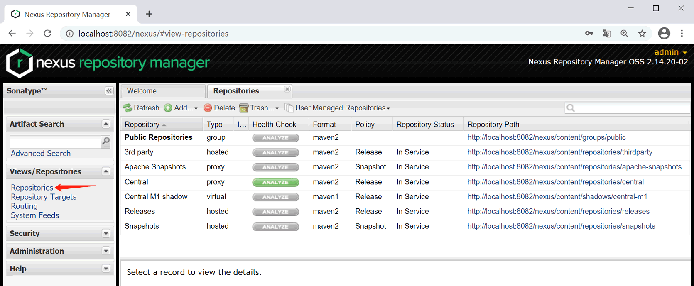
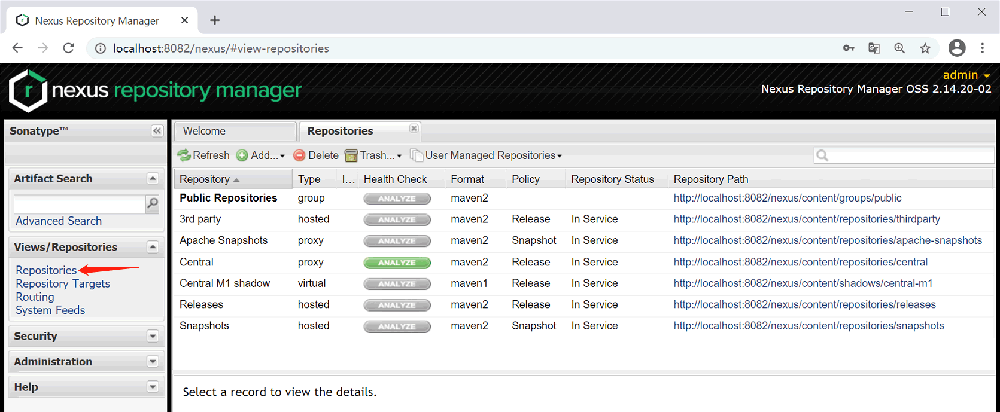

Nexus仓库属性和分类
Nexus 作为一款 Maven 仓库管理器，仓库（Repository）自然是 Nexus 最核心的概念。Nexus 中提供了许多仓库概念，如代理仓库、宿主仓库以及仓库组等。Nexus 为每一种仓库都提供了丰富的配置参数，方便我们根据自身需要进行定制。

在仓库列表中，每个仓库都具有一系列属性：
由图 1 可知，Nexus 2.x 默认创建了 6 个仓库，我们称它们为 Nexus 内置仓库。
为了更加直观的理解仓库组、代理仓库和宿主仓库的概念，我们通过下图展示它们的用途和区别。

由上图可知：
Nexus 仓库属性
点击左边导航栏中的 Repositories，可以看到 Nexus 自带的几个内置仓库，如下图所示。
图1：Nexus 内置仓库列表（猛击图片可以查看原图）
在仓库列表中，每个仓库都具有一系列属性：
- Type：仓库的类型，Nexus 中有 4 中仓库类型：group（仓库组）、hosted（宿主仓库）、proxy（代理仓库）以及 virtual（虚拟仓库）。
- Format：仓库的格式。
- Policy：仓库的策略，表示该仓库是发布（Release）版本仓库还是快照（Snapshot）版本仓库。
- Repository Status：仓库的状态。
- Repository Path：仓库的路径。
由图 1 可知，Nexus 2.x 默认创建了 6 个仓库，我们称它们为 Nexus 内置仓库。
- Maven Central：该仓库用来代理 Maven 中央仓库，其策略为 Release，只会下载和缓存中央仓库中的发布版本的构件。
- Releases：策略为 Release 的宿主仓库，用来部署公司或组织内部的发布版本构件。
- Snapshots：策略为 Snapshot 的宿主仓库，用来部署公司或组织内部的快照版本构件。
- 3rd party：策略为 Release 的宿主仓库，用来部署第三方发布版本构件，这些构件一般无法从任何远程仓库中获得。
- Public Repositories：该仓库组将上述所有存储策略为 Release 的仓库聚合并通过统一的地址提供服务。
Nexus 仓库分类
Nexus 仓库按照类型（Type）区分，主要分为以下 3 个类型：- 代理仓库（proxy）：用来代理远程公共仓库，如 Maven 中央仓库、JBoss 远程仓库。
- 宿主仓库（hosted）：又称 Nexus 本地仓库，该仓库通常用来部署本地项目所产生的构件。
- 仓库组（group）：用来聚合代理仓库和宿主仓库，为这些仓库提供统一的服务地址，以便 Maven 可以更加方便地获得这些仓库中的构件。
为了更加直观的理解仓库组、代理仓库和宿主仓库的概念，我们通过下图展示它们的用途和区别。
图2： Nexus仓库分类
由上图可知：
- Maven 可以直接从宿主仓库中下载构件。
- Maven 也可以从代理仓库中下载构件，代理仓库会从远程仓库下载并缓存构件。
- Maven 还可以从仓库组中下载构件，仓库组会从其包含的宿主仓库和代理仓库中获取构件。
关注公众号「站长严长生」，在手机上阅读所有教程，随时随地都能学习。内含一款搜索神器，免费下载全网书籍和视频。

微信扫码关注公众号